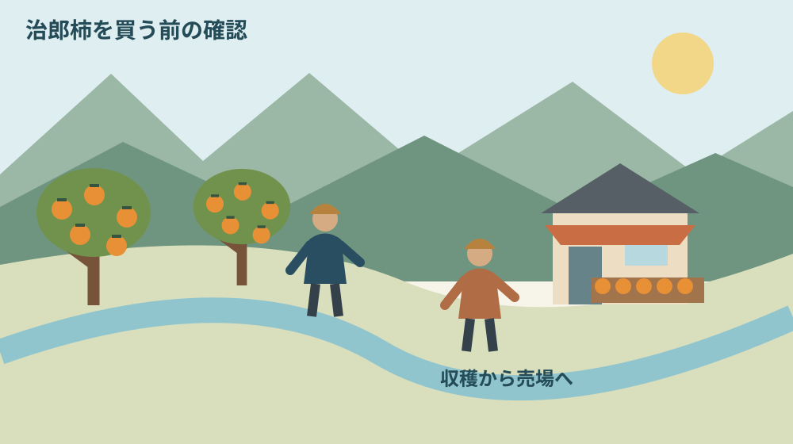
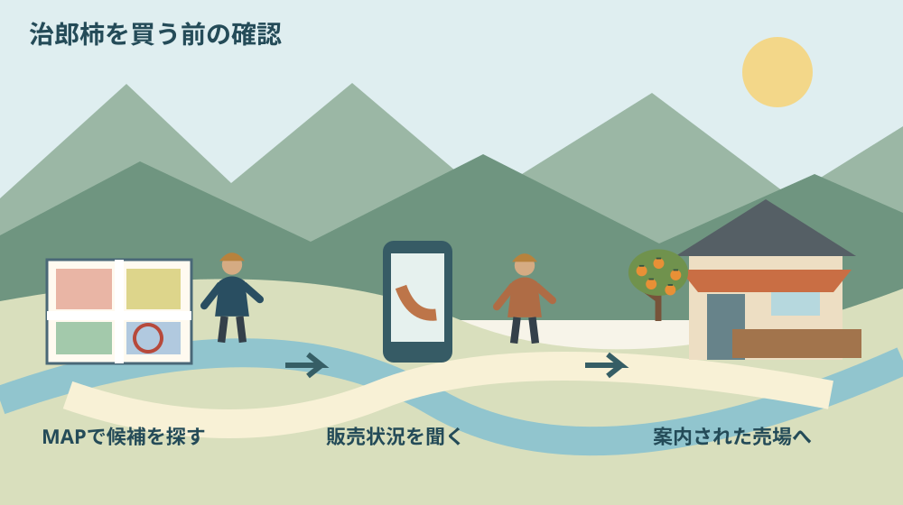

森町の次郎柿直売所【2026年】販売時期・予約・アクセス
2026年10月19日 更新
森町の次郎柿、いつから・どこで買える？
直売を計画する目安は10月下旬から11月です。佐野ファームの2026年の案内は10月下旬〜11月下旬予定。田中農園は今年の注文受付を告知し、通常の直売期を10月下旬〜11月中旬と案内しています。JAの「森の市」も購入先の候補です。
このページでは、3つの購入先の場所・連絡先・販売案内を比較できます。店頭販売、店頭受取予約、地方発送の受付日はそれぞれ異なります。当日の在庫や開始日の確定情報は、下の公式案内から確認してください。
「森町の柿を買いたいけれど、いつ、どの店へ行けばよいのか」。浜松・磐田・袋井などから出かける方や、帰省に合わせて買いたい方へ、公開されている案内をまとめました。名称は「次郎柿」と「治郎柿」の両方が使われています。この記事では検索しやすい「次郎柿」を中心に、店舗の表記も併記します。
大石浩之（磐田市／不動産業）です。私は、買う場所を調べるときには、家族が動ける時間と店が受け渡せる時間をそろえることが大切だと考えます。今回は2026年10月19日に店舗・生産者・JA・森町の公式ページを読み直しました。電話で在庫を確認した記事ではありません。
次郎柿の直売所・購入先を比較
まずは行きやすい一店を選んでください。掲載順はおすすめ順位ではなく、案内の種類が違う3件を並べたものです。森町内の全直売所を網羅した一覧ではありません。住所が分かる売場は地図検索へ、佐野ファームは直売所への行き方を載せた公式案内へ進めます。
| 購入先 | 販売時期・営業時間 | 場所・電話・確認先 |
|---|---|---|
| 佐野ファーム マルシェ リコパショ | 2026年：10月下旬〜11月下旬予定 火〜土9時から／日曜10時から 月曜休み・売切れ終了 | 森町谷中の直売所。公式のアクセス図で売場を確認 090-5004-2732 2026年の柿販売案内 ／ 公式アクセス・直売情報 |
| 田中農園 | 通常の直売期：10月下旬〜11月中旬 2026年の注文受付案内あり 電話受付9〜18時（店頭営業時間ではありません） | 森町円田455 070-1623-0319 住所から地図を開く ／ 公式の販売・注文案内 |
| JA遠州中央 森の市 | 店舗紹介では11月の旬の品として案内 9〜18時／年末年始・盆を除き年中無休 入荷日は店舗へ確認 | 森町森1731-2／駐車場あり 0538-85-0831 住所から地図を開く ／ JAの店舗案内 |
スマートフォンでは店舗ごとに情報をまとめて表示します。販売期間は在庫の保証ではありません。税込価格・数量・箱代・送料・支払い方法は、希望する商品ごとに購入先へご確認ください。
佐野ファーム｜今年の直売案内を確認できる
2026年10月1日付の生産者のお知らせでは、直売を10月下旬から11月下旬までの予定としています。火曜から土曜は9時、日曜は10時からで、月曜は休みです。売り切れた時点で販売を終える案内なので、終了時刻だけを当てにして向かう計画にはしない方がよいでしょう。
常設の「直売情報」ページには「10月24日〜」という記載もありますが、その欄には年の表示がありません。この記事では年が明記された2026年のお知らせを優先し、10月24日を今年の確定した開始日とは扱っていません。直売開始が決まったかどうかは、訪問前に最新案内で確認してください。
同じ直売ページには、とうもろこしの販売時間やマルシェの通常営業時間も載っています。柿の販売については、作物名と年のある欄を読みます。連絡先はマルシェ リコパショの090-5004-2732。会社所在地の表示と売場へのアクセス図を取り違えないよう、公式ページで行き先を確かめましょう。
田中農園｜家庭用・贈答用の希望を先に伝える
田中農園の公式トップページには、2026年の治郎柿販売が近づき、発送品・贈答品の注文受付を始める旨の案内があります。通常の直売期は10月下旬〜11月中旬とされていますが、訪問する日の販売開始・終了時刻までは、この案内だけで確定できません。
所在地は森町円田455です。公式掲載の携帯電話は070-1623-0319、FAXは0538-85-3613で、電話受付は9時から18時。これは電話を受ける時間の案内なので、そのまま店頭の営業時間に置き換えず、受け取りたい日時を伝えて相談してください。
自宅で食べるものと贈り物では、必要な箱や数量が違います。注文の際は「家庭用を少量」「贈答用を一箱」「遠方へ発送」など、用途を先に伝えると確認しやすくなります。サイトに注文受付の案内があっても、希望する規格がその日に用意できるかは別に確かめます。
森の市｜遠州森駅からの買い物にも
JA遠州中央の店舗紹介では、森の市は遠州森駅から西へ約200メートル、JA森支店の道を挟んだ向かいと案内されています。営業時間は9〜18時、所在地は森町森1731-2、電話は0538-85-0831。駐車場ありと掲載されています。
店舗は地元の野菜や果物を扱い、11月の治郎柿を季節の品として紹介しています。電車の利用と組み合わせて買い物先を検討できますが、柿の重さと帰りの移動も考えて量を選びましょう。駐車場の空きや希望日の入荷状況を保証する案内ではありません。

直売・店頭受取・地方発送は、受付日を分けて見る
「予約が始まった」と「店頭で買えるようになった」は同じ意味ではありません。贈答用の注文を先に受け、実が色づいてから発送することもあります。検索結果の短い説明だけで出発日を決めず、買い方が店頭なのか発送なのかを確かめてください。
佐野ファームの2026年のお知らせでは、店頭受取の予約は希望日の2日前から当日までと案内しています。店頭または電話で申し込み、電話ではSMSも利用できるという記載があります。収穫状況を見て受け付ける仕組みなので、それより先の日の取り置きまで可能だとは考えないようにします。
地方発送については、佐野ファームの公式トップに2026年10月29日（木）9時から予約、発送は11月中旬〜下旬予定という案内を確認しました。これは地方発送の予定です。直売所の開店日や、注文した人全員への到着日を表すものではありません。
10月1日のお知らせに載る既存購入者向けの先行予約は10月3日までの案内でした。10月19日時点で、これを受付中の募集として紹介しないようにしています。化粧箱の商品も、その記事では受付上限到達とあります。現在の受付枠や再開状況は、注文前に公式トップ・注文画面を確認してください。
田中農園も2026年の発送品・贈答品の注文を案内しています。送付先、希望する量、用途を整理してから相談すると、商品代と送料を合わせた金額を確認しやすくなります。本記事で両農園の価格比較はしていません。箱の大きさや等級が異なるものを、単純に一箱の価格だけで比べないためです。
森の市については、この調査で取り置きや地方発送の条件を確認していません。必要な場合は店舗へ尋ねてください。連絡をしただけで注文が成立したと思わず、受取人、数量、受取日時または発送時期、支払い方法まで合意できたかを確認します。
ほかの販売先を探すときは、森町公式のMAPへ
町内の位置関係や別の候補を探すには、森町公式「観光パンフレット」に掲載された「とうもろこし・治郎柿MAP」が役立ちます。同じページには町の観光案内もあり、買い物以外に立ち寄る場所を考える入口になります。
町公式のとうもろこし・治郎柿MAPを開く（PDF・約1.8MB）
このPDFの掲載元は2025年5月9日更新の町のページです。地図は販売先の候補を探すために使い、2026年の営業日や当日の在庫は各店の案内で補ってください。地図上の印だけを見て「今日、買える」と判断する資料ではありません。
車で行くときは、農園名だけでなく指定された売場名と住所を照合します。畑、作業場、事務所、直売所が同じ場所とは限りません。農道や住宅前に車を止めて入口を探すより、出発前に駐車場所まで分かる案内を確認する方が、地元の方の移動や作業を妨げずに済みます。
家庭用・贈答用の選び方と、持ち帰った後の保存
家庭用は、まず食べる人数と日数から量を決めます。配る予定のない分まで増やすと、好みの硬さのうちに食べ切れないことがあります。袋入りや箱入りの量を見て、数日に分けて楽しめるか考えましょう。規格外品や割安な袋が常にあるとは確認していません。
贈答用は、相手が受け取れる時期と、家族で食べる量を先に考えます。見た目だけでなく、箱・包装・送り状・送料を含めた条件を確認してください。予約開始日は到着日ではないので、特定の日に渡す予定があるなら、日付の希望が可能かを注文前に尋ねます。
JA遠州中央の農産物百科は、ヘタ付近まで色が付き、持ったときに重みがあり、実の硬さがそろったものを選ぶ目安としています。ヘタと実の間の隙間にも注意する案内です。売場では実を強く押さず、品物を傷めない範囲で店の方に状態を聞くとよいでしょう。
同資料には、湿らせた紙をヘタに当て、袋などで包み、ヘタを下にして冷蔵庫の野菜室に置く保存方法も紹介されています。濡れた紙が果肉側に触れ続けないよう注意が必要です。日持ちは購入時の熟し具合にもよるので、保存すれば一定日数必ず持つとは考えず、早めに状態を確かめながら食べてください。
森町での暮らしへの影響｜買い物と秋のお出かけを組み合わせる
町内で暮らす方は普段の買い物と、町外から来る方は行事や帰省と組み合わせると、移動の予定を立てやすくなります。帰省先の家族へ渡すなら、硬めが好きか、何個くらい食べるかを聞いておくと、店頭で量に迷いにくくなります。
秋のお出かけと合わせたい方は、森のまつり2026の特集や森町の年間行事も参考にしてください。行事当日の道路や駐車場の状況は普段と異なる可能性があります。午前の買い物と午後の見学を組む場合も、当年の交通案内と帰りの時間を一緒に確かめます。
家族に高齢の方や小さな子がいる場合は、長く並ぶことや荷物を運ぶことも含めて計画します。誰が受け取りに行き、誰が荷物を持つかを決めるだけでも、当日の動きは整理できます。品物の確認や会計の間に、道路や駐車場で家族を待たせない段取りも大切です。
良い点｜生産者の当年案内から、買い方を選べる
今回の更新で役立つと感じたのは、生産者自身による2026年の案内を読めることです。直売期間に加え、受取予約と地方発送を分けて説明する情報があると、現地へ行く方も、遠方に住む方も、自分に合う買い方を検討できます。
JAの店舗や町の地図も併せて使えるため、農園を一つだけ知っている状態から、交通手段に合う候補を比較するところへ進めます。私は、店の数を多く並べるより、確かめた情報から一店を選べる案内にする方が、初めての方には使いやすいと考えます。
注文したい点｜通常期と今年の開始日を見分けやすく
読者として迷いやすいのは、同じサイトに作物別の営業時間、マルシェの通常営業、年のない販売日が並ぶことです。私は、品目と対象年、更新日が近くにあると、初めて訪れる方も予定を立てやすくなると思います。このページでも、今年の告知と通常の販売期を分けて記載しました。
一方で、収穫前に販売量や最終日まで確定することを生産者へ求めるのは難しい面があります。予定が変わることと情報が誤っていることは別です。買い手も公開情報を先に読み、分からない在庫や受取条件を短く尋ねることで、店の負担を増やしすぎずに確認できます。

対案・結論｜出発前に、希望日と用途を一度確認する
問い合わせるときは「何月何日に、森町産の次郎柿を家庭用で買いたい。販売予定と受取場所を教えてください」のように、日付と用途を一緒に伝えます。贈り物なら発送希望であることも最初に添えます。住所や基本時間は公開ページで読み、残る確認だけを尋ねると話が短くまとまります。
出発前のメモは、店名、売場住所、連絡先、確認日時、回答内容の5点が基本です。予約した場合は数量、受取人、受取日時を追加します。単に「在庫ありと聞いた」のか、「取り置きを受けてもらった」のかまで書き分けると、家族が代わりに受け取る場合も伝わります。
希望日に販売がないと分かったら、別の日にする、ほかの候補を調べる、発送を相談するという選択肢があります。せっかくの秋の買い物ですから、予定を詰め込まず、確認できた条件に合わせて楽しむ準備をしていただきたいと思います。
次郎柿と治郎柿の名前、原木を守る地域の仕事
森町の文化財解説では、松本治郎が持ち帰った柿の幼木に由来する呼び名と、戦後に「次郎柿」と書かれるようになった経緯を紹介しています。二つの表記は、買い物先を検索するときにも知っておくと便利です。
原木は文化財として守られている木で、直売所や自由に収穫できる場所ではありません。原木の見学と果物の購入は目的地を分けます。由来に関心がある方は、次郎柿原木を守る人の記事も合わせてお読みください。
大石の視点｜秋の買い物を、家族の地域の記録にも
私は、森町の特産品を買う機会が、実家のある地域を家族で知る入口にもなると考えています。店名や行き方を一人しか知らないと、親に頼まれた買い物を別の家族が引き継ぐときに困ることがあります。公式ページと受取場所を共有しておくことは、小さな暮らしの引き継ぎです。
不動産の相談でも、地図上の住所だけでなく、現地へ入る道や駐車する場所を確かめます。柿の買い物でも、事務所の住所を見ただけで農地へ入らず、案内された売場を使うという基本は共通しています。畑や庭に実がなっていても、所有者の許可なく入ったり取ったりはできません。
帰省の際に実家や農地の話が出ても、その場で売却まで決める必要はありません。家族が分かる住所、連絡先、道路や境界について残っている資料を共有するところからで十分です。買い物の予定と家の相談は分けながら、地域のことを家族で話す機会を持てるとよいと私は思います。
まとめ｜一店選び、今年の案内から予定を立てる
森町の次郎柿を探すときは、まず上の比較表から購入先を選び、年の明記された販売案内で時期と買い方を確認してください。車で向かう方も電車を使う方も、売場と帰りの移動が具体的になってから量を決めると、無理のない買い物になります。
本記事は10月1日公開のURLを引き継ぎ、10月19日に2026年の販売情報、店舗比較、予約・発送、選び方を更新しました。各店の価格や当日の在庫を随時表示するページではありません。訪問直前は店舗の公式情報をご確認ください。
よくある質問
2026年、森町の次郎柿はいつから買えますか？
佐野ファームの2026年案内では10月下旬〜11月下旬予定です。田中農園の通常の直売期は10月下旬〜11月中旬で、今年の注文受付案内もあります。森の市は11月の旬の品として紹介しています。実際の開始日と当日の入荷は、購入する店舗の最新情報でご確認ください。
次郎柿と治郎柿は違う柿ですか？
森町の案内では両方の表記が使われています。町の文化財解説は松本治郎に由来する呼び名と、戦後に「次郎柿」と書かれるようになった経緯を紹介しています。森町産を希望する場合は、品種名だけでなく産地も確認してください。
予約なしで行っても買えますか？
当日の在庫は確認していません。佐野ファームは売切れ次第終了と案内し、2026年の店頭受取予約は希望日の2日前〜当日を対象としています。ほかの店の取り置き条件はそれぞれ異なるため、必要な量と訪問日を伝えてご確認ください。
地方発送はいつ申し込めますか？
佐野ファームの公式トップには2026年10月29日9時から地方発送予約、発送は11月中旬〜下旬予定とあります。田中農園も2026年の発送品・贈答品の注文受付を案内しています。受付枠・商品・送料・届け先の条件は各店の最新の注文案内で確認してください。
車がなくても買いに行けますか？
森の市はJAの案内では遠州森駅から西へ約200メートルです。電車を使う場合の候補にできます。希望日の柿の入荷と、帰りの時刻、持ち運べる量を確認してください。
実家や土地の資料を家族で整理する場合は、実家カルテも利用できます。売却未定でも使える本サイト運営会社の民間サービスです。森町や各団体の公式手続ではなく、利用は任意です。
公式情報源
2026年10月19日確認。生産者・店舗・JA・森町の公開ページを参照しています。営業予定・受付枠は変更される場合があります。各店への電話照会は行っていません。